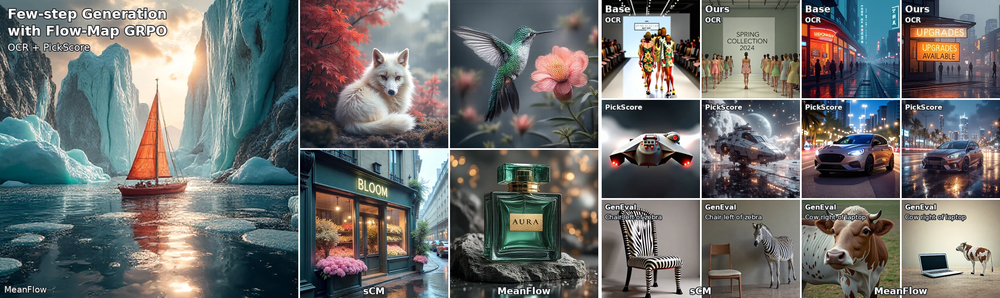
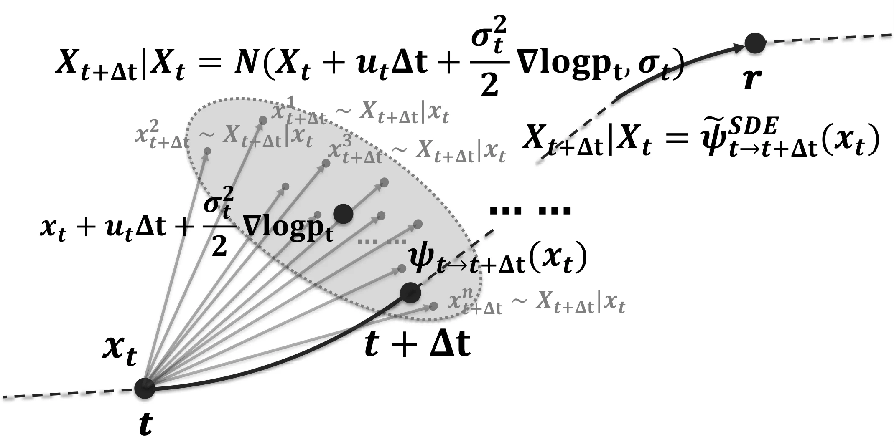
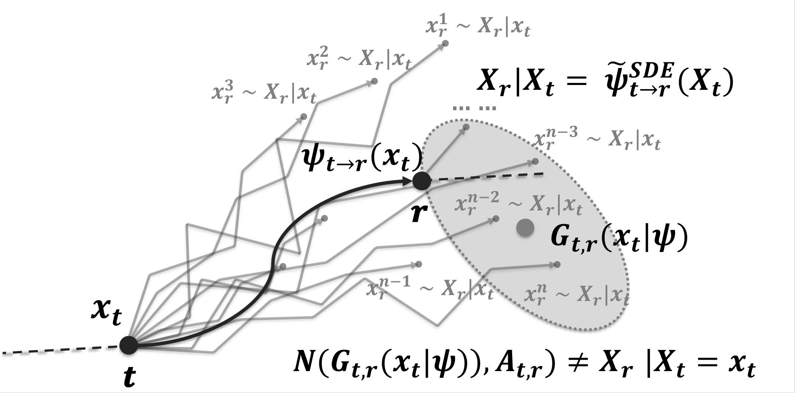
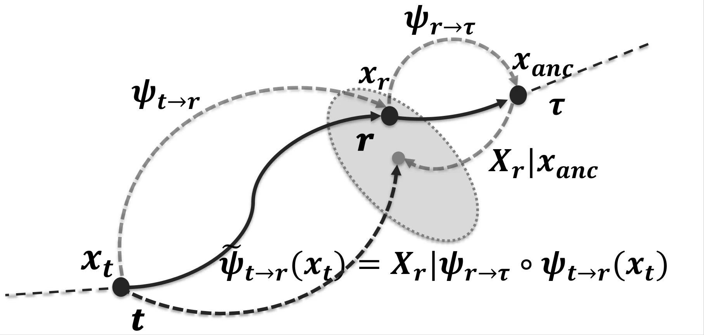
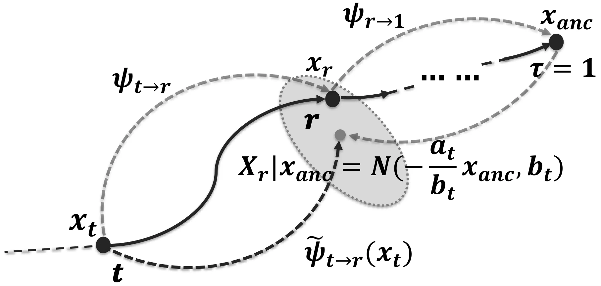
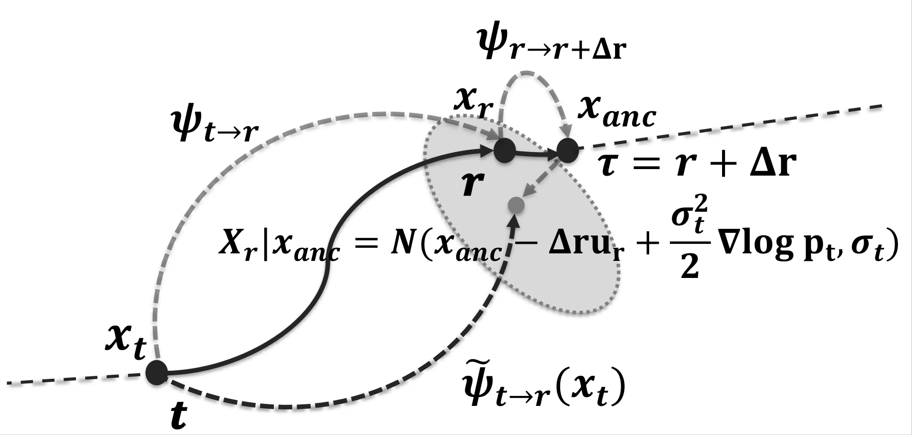
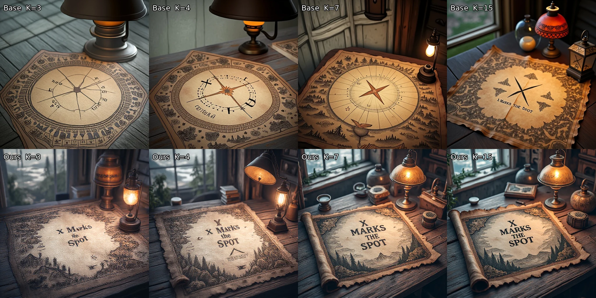

Transport, anchor, resample
Jump from t to r with the flow map, transport the result to an anchor at time τ, then sample X̃r from pr|τ. With accurate maps, X̃r keeps the marginal pr.
REINFORCEMENT LEARNING · FEW-STEP GENERATION
Reinforcement Learning for Few-Step Flow-Map Generators
via Anchored Stochastic Composition
Georgia Institute of Technology

01 — OVERVIEW
Few-step flow-map generators such as MeanFlow and consistency models jump between noise and data in a few deterministic steps. Likelihood-ratio RL needs stochastic transitions with tractable densities, and the SDE construction used for velocity samplers does not extend to long-range jumps. Anchored Stochastic Flow Map Composition (ASFMC) transports each jump to an anchor and resamples back from a conditional distribution. This preserves the marginal probability path and yields a Gaussian policy. Flow-Map GRPO trains MeanFlow-style two-time maps and sCM-style one-time models with one GRPO procedure, without changing their parameterization.
02 — INTERACTIVE COMPARISONS
Choose a backbone, a reward and an example.
Base and Flow-Map GRPO share the prompt and seed.
Examples from the paper's appendix. Adapters are trained at K = 4. K counts the stochastic transitions before the final endpoint step, so sampling uses K + 1 steps. Click an image to enlarge.
03 — METHOD
Keep the pretrained flow map.
Add randomness that preserves the path.
For a small velocity step, an SDE discretization gives a Gaussian transition, which is how Flow-GRPO makes flow matching stochastic. A flow map jumps over a long interval. There, accumulated nonlinear stochastic dynamics generally produce a non-Gaussian transition, and the paper proves that no additive-Gaussian form built from the flow map and its derivatives represents it in general. Resolving the path with many small steps would give up the few-step advantage.





Jump from t to r with the flow map, transport the result to an anchor at time τ, then sample X̃r from pr|τ. With accurate maps, X̃r keeps the marginal pr.
Predict the clean endpoint X1 and resample X̃r ~ 𝒩(arX1, br2I). One-time models such as sCM predict X1 directly.
A short anchor gives X̃r = Xr + hλ2[ur(Xr) − (ȧr/ar)Xr] + σr√h ξ, accurate to O(h3/2). Two-time maps such as MeanFlow use it.
Both anchors define Gaussian policies with explicit means and variances, so one clipped GRPO objective trains either model through LoRA adapters. The reward needs no gradients: per-image rewards (OCR, PickScore, GenEval) and image-set rewards (MMD) both apply.
04 — RESULTS
Trained and evaluated at K = 4 (five sampling steps).
Gains hold at every tested step count.
| Reward | Metric | MeanFlow | sCM | ||
|---|---|---|---|---|---|
| Base | Ours | Base | Ours | ||
| OCR | OCR accuracy | 0.3491 | 0.8504 | 0.4903 | 0.8863 |
| PickScore | PickScore | 20.9758 | 23.0772 | 20.3517 | 23.4820 |
| GenEval | GenEval | 0.5041 | 0.8454 | 0.4513 | 0.8049 |
| OCR + PickScoreone adapter | OCR accuracy | 0.3491 | 0.7719 | 0.4903 | 0.8568 |
| PickScore | 20.9758 | 22.4964 | 20.3517 | 22.5153 | |
One LoRA adapter per reward and backbone; the joint adapter is trained on a mixture of OCR and PickScore prompts.

| Method | sCM | MeanFlow | ||
|---|---|---|---|---|
| OCR | PickScore | OCR | PickScore | |
| Base | 0.4903 | 20.3517 | 0.3491 | 20.9758 |
| SFT | 0.4588 | 20.7893 | 0.3360 | 20.9763 |
| DiffusionNFT | 0.5363 | 20.2200 | 0.3576 | 20.5418 |
| Flow-Map GRPO | 0.8863 | 23.4820 | 0.8503 | 23.0772 |
| Policy | FID ↓ | Prec. ↑ | Rec. ↑ |
|---|---|---|---|
| MeanFlow · local anchor | |||
| Base | 25.43 | 0.591 | 0.340 |
| Ours | 16.72 | 0.774 | 0.421 |
| Drift + const. noise | 32.71 | 0.609 | 0.214 |
| No drift | 70.13 | 0.269 | 0.195 |
| No drift + const. noise | 49.25 | 0.384 | 0.102 |
| CM · endpoint anchor | |||
| Base | 25.69 | 0.567 | 0.381 |
| Ours | 15.65 | 0.784 | 0.438 |
| Constant noise | 42.16 | 0.460 | 0.107 |
Removing the drift correction or replacing the scheduled noise with variance-matched constant noise degrades generation; the anchored policy improves all three metrics.
05 — CITATION
@article{li2026flowmapgrpo,
title = {Flow-Map GRPO: Reinforcement Learning for Few-Step Flow-Map Generators via Anchored Stochastic Composition},
author = {Li, Zhiqi and Zhang, Wen and Zhu, Bo},
journal = {arXiv preprint arXiv:2607.00535},
year = {2026}
}